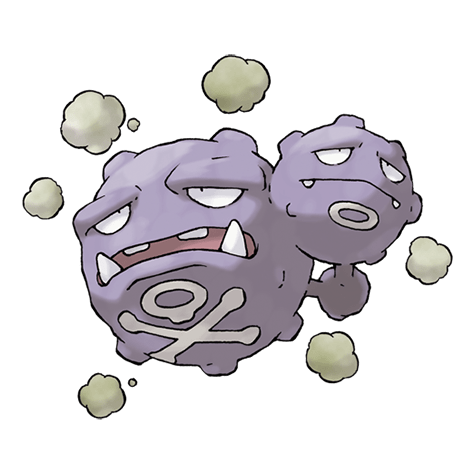

Назад
Виззинг

Виззинг — Покемон 1 поколения под номером 110 в Pokedex. Обитает он в регионе Канто и относится к Poison типу. Это последняя стадия эволюции Покемона Коффинга. Визинг любит газы, выделяемые гнилым кухонным мусором. Этот Покемон ищет грязный, неухоженный дом и поселяется там. Ночью, когда люди спят, этот Покемон выходит на охоту за мусором.
Тип:
Ядовитый
Эволюция
# 110 Виззинг
Финальная стадия